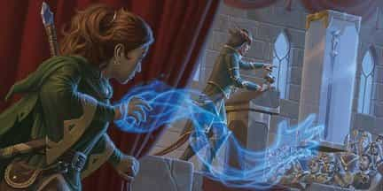

- Заговор, вызов
- Время накладывания: 1 действие
- Дистанция: 30 футов
- Компоненты: В, С
- Длительность: 1 минута
- Классы: бард, волшебник, изобретатель, колдун, чародей
- Подклассы: мистический ловкач (плут), хранитель роя (следопыт)
В точке, выбранной вами в пределах дистанции, появляется призрачная парящая рука. Рука существует, пока заклинание активно или пока вы не отпустите её действием. Рука исчезает, если окажется более чем в 30 футах от вас или если вы повторно наложите это заклинание.
Вы можете действием контролировать руку. С её помощью вы можете манипулировать предметами, открывать незапертые двери и контейнеры, убирать предметы в открытые контейнеры и доставать их оттуда или выливать содержимое флаконов. При каждом использовании руки вы можете переместить её на 30 футов.
Рука не может совершать атаки, активировать магические предметы и переносить более 10 фунтов (4,5 кг).
Волшебная рука — Заклинания
Волшебная рука [Mage hand]PH14 PH24
Галерея

Комментарии
Одно из самых полезных утилитарных заклинаний, особенно в ситуациях, когда скрытность превыше всего. Взаимодействие с миром издалека может быть полезно в мириаде ситуаций, но я хочу вдобавку к очевидным выделить и другие:
- Если ваша игра не требует оптимизаторского подхода, в бою вы можете издеваться над противником - стягивать с врага ремни, перетягивать повязку с глаза пирата, схватить и уронить на кого-то полотно чтобы дизориентировать.
- Если вы беспокоитесь о ловушках, не посылайте фамильяра или зверя Следопыта, просто отправьте волшебную руку, чтобы проверить на нажимные плиты или растяжки.
В общем если у вас достаточно креативности - не спите, хорошая вещь. Не хватает только дальности, если вы не Мистический ловкач. Если особо интересно, также посмотрите черту Телекинетик.
- Нет, но она всё ещё может принести тебе пиво.
Склянка упала и лежит под ногами, яд пролился и впитался в землю.
Рука не может совершать атаки, это отвечает на многие вопросы.
Кроме того, в таком случае возникает масса вопросов. Считается ли рука существом? Может ли она создавать помехи врагам? А если враг стреляет?
А кроме этого - ну конечно, абсолютно ничем не обоснован запрет, кругом же глупые люди)
"Если возникает вопрос, является ли то, что вы делаете, атакой, ответ будет простым: если вы совершаете бросок атаки, вы совершаете атаку."
- Книга игрока, 195 страница.
навернро…
Требует соматического компонента. И управляется действием.
Предполагается она копирует действие руки заклинателя. И требует активной жестикуляции.
Одновременно работать тремя руками нельзя. (Ну кроме тех случаев когда две руки двигаются синхронно.)
Если этой рукой воруют проверка (аркана против восприятия) причем делается с помехой если жертва или обыватели теоретически могут заметить заклинателя...
В остальных нестандартных случаях - проверка арканы, на каждое действие.
Рука без управления замирает на месте. Подобно машинке на радиоуправлении.
Плюс если руку загрузить боше чем на 10фунтов она незамедлительно исчезает. Оканчивая заклинание.
(Предполагаю: по этому нельзя и атаковать. Рука получив отдачу исчезнет не завершив действие атаки)
Ну и рука не имеет обратной связи. Нащупать ей ничего нельзя...
А вот сломать или раздавить слишком хрупкий объект вполне.
в ход, в который призвали руку, рукой можно сделать что то или надо ждать следующий?
"RAI": Чисто интуитивно, фокусы, как и другие заговоры преобразования, не могут причинять урон (см. Шквал, Лепка земли, Формование воды). Поэтому нагреть выше температуры чашки тёплого чая у вас, скорее всего не получится, также как и остудить ниже температуры зимнего снега (это так, для примера).
На все эти вопросы ответ определяет ДМ, потому что они существуют вне правил игры. И ожидать, что эта идея сработает и на неё можно будет регулярно полагаться нелепо, потому что самый логичный ответ ДМа будет "сосуд, удерживаемый волшебной рукой, раскалывается под нарастающей температурой, и водяной пар со свистом вылетает из него".
Второе: если щит в Волшебной руке закрывает силуэт твоего персонажа на 3/4 - это будет укрытие. Но, как мастер, я бы сделал его одноразовым, ибо силенок руке явно не хватит, чтобы удержать удар.
Третье: даже если забыть, что второй щит не дает бонуса, владение щитом - это не просто его держать. Нужно понимать, как он используется, нужно подставить его под удар, желательно по касательной. Управление рукой идет Действием (можно, конечно, заготовить реакцию, но это полный бред, лучше уж Действие на Уклонение потратить), а это значит, что когда тебя будут бить - рука будет стоять и наблюдать, статично. Толку от такого щита нет
Т.е. если создать "крошечную пушку", то ее можно переносить в "волшебной руке?
Или возможно использовать "Волшебную руку" и инструменты для создания "Мистической пушки" в дали от себя (дальше 5 футов)?
Берем Хафлинга или Гнома (их вес 18 кг). Применяем на себя Уменьшение, благодаря которому наш вес делится на 8. В итоге наш вес составит 2,25 кг. Волшебная рука может нести вес до 4,5 кг, так что мы можем запросто взять самого себя за шкирку и поднять.
Уменьшение - 2 ячейка, концентрация, 1 мин, помеха на Силу. Волшебная рука - 1 мин, 30 фт.
Полёт - 3 ячейка, концентрация, 10 мин, 60 фт.
Я бы сказал - очень честно.
Особенно рядом с Левитацией (2 ячейка, 10 мин, 20фт вертикально, действие на горизонтальное перемещение при наличии возможности)
PS: А ещё - 2 кг может без труда поднять на верёвке союзник.
Буквально свечку держать со свободными руками.
Отход ей не нужен, потому что она не провоцирует атаки. Действие "спрятаться" тем более относится к персонажам, а не к маленькой полупрозрачной руке, у которой нет ни стата Ловкость, ни навыка Скрытность. Если вы хотите действовать ей скрытно - так и опишите ДМу, что прячете ее за предметами, и пусть он сам решает, какая сложность должна быть на проверку Восприятия.
А то интересно получается: левитацию на себя, и рукой полетели-полетели
Вот ещё пара интересных вариантов, если нужна не совсем магическая рука:
Алхимический сборник [Alchemical compendium] - Позволяет одним из своих применений призвать оружие Магическое оружие [Magic weapon]
Бесконечный гримуар [Grimoire Infinitus] - Способна призвать волшебную руку на максималках Длань Бигби [Bigby's Hand]
Это не атака ? Не атака. Она просто держит ? Просто держит
И можно ли в таком случае через мета магию чародея создать несколько рук и переносить самого себя как это делал Бетельгейзе из Ре Зеро в 1 сезоне
Для облегчения веса можно даже кастануть через мета магию на самого себя несколько раз уменьшение для облегчения веса
Сердце - не предмет. Рука не проходит сквозь препятствия. Руку не создать в точке, которую вы не видите (т.е. внутри чужого тела). Ни одна из указанных заклинанием манипуляций не разрешает сделать то, что вы хотите. Так что нет, нельзя.
И несколько раз уменьшение тоже не получится скастовать, как минимум потому что одноимённые эффекты не складываются
Я знаю, что странный вопрос, но мы с друзьями до сих пор об этом думаем.
В целом, крайне полезное заклинание, позволяющее взаимодействовать с разными опасными вещами и доставать туда, куда обычно достать нельзя.
Также это расстояние можно увеличить еще одним заговором выкопав под противником 5 футов, т.е потребуется 2 хода держать противника в яме(попутно закидывая камнем бонусным действием) и это увеличивается еще на 1к6 урона
и на арене босса должны быть оооООООоочень высокиа потолки)
про руку только это:
Вы узнаёте заговор волшебная рука [mage hand]. Вы можете накладывать его без вербальных или соматических компонентов, и вы можете делать призрачную руку невидимой. Если вы уже знаете этот заговор, то его дистанция увеличивается на 30 футов, когда вы его накладываете. Базовой характеристикой этого заклинания является та, которую вы увеличили данной чертой.
Если включить логику - человек или любое существо схожего размера может приложить усилия, значительно превышающие максимальный переносимый вес руки волшебной руки: 100 фунтов или 45 кг являются стандартом для боевого лука, например, то есть опытный лучник при каждой атаке выжимает в десять раз больше, чем указанный предел для волшебной руки. Короче, рука не удержит.
На месте мастера, впрочем, я бы разрешил тырить оружие из ножен или стрелы из колчана. Но в общем и целом любое применение в бою остается целиком на усмотрение мастера.
Колдун гения призывает волшебную руку и прыгает в свой сосуд, который держит рука
Как далеко рука сможет переместить себя и сосуд с колдуном? Я понимаю так, что раз колдун не отдаляется, рука не развивается. Каждое применение это 30 футов, то есть суммарно 180 футов за минуту, без перепризыва. А можно ли перепризыва руку, находясь в сосуде?
Да, вылить масло входит в перечень манипуляции предметов, потому что это и "открыть контейнер", и "вылить содержимое флакона". И ускоренным заклинанием можете сотворить что угодно.
Если ваш герой лешился руки или от предыстории её нету — то этот спел станет как отличной заменой, так и офигителтным отыгрышным элементом для вашего персонажа.
1 действие раз в минуту - это мелочь, и можно договориться с мастером, что она просто существует всегда вне боя, как часто делают с Указанием. В ней и щит держать можно RAW, он весит 6 фунтов... правда, я бы сказал, что при ударе рука выронит щит, так как прилагаемая к ней сила резко становится больше дозволенных 10. Я бы разрешил, как уникальный отыгрыш персонажа, пользоваться оружием или щитом, пока рука "приклеена" к персонажу и не летает, но все на усмотрение ГМа.
такая комбинация: волшебная рука и крошечная магическая пушка артеллириста
будет работать?
в самом сабклассе нет указания на вес, но сказано, что крошечную пушку можно держать в одной руке
(размер выбираем при создании)
отчасти вопрос, отчасти делюсь идеей
Имхо RAI именно кастеру нельзя атаковать и так далее с помощью руки, а не самой руке. По тексту сначала рассказывают, что можно, потом - что нельзя. Про RAW не спорю, формулировка странная.
Вот ещё примеры таких предметов: Волшебные палочки ("Когда вы её держите..."), Куб врат ("Вы можете действием нажать на одну из граней..."), Хрустальный шар ("Если вы его касаетесь, вы можете действием накладывать им заклинание наблюдение..."). Всё это нельзя выполнить при помощи волшебной руки.
Вот, в чём разница с пушкой артиллериста: для её активации не требуется ни держать её, ни нажимать на что-либо, ни касаться. Она может лежать бесхозная или находиться в чужих руках или в волшебной руке, и артиллерист всё равно сможет её активировать. Это работает не потому что у волшебной руки нет своего сознания, а потому что она никак не участвует в активации пушки.